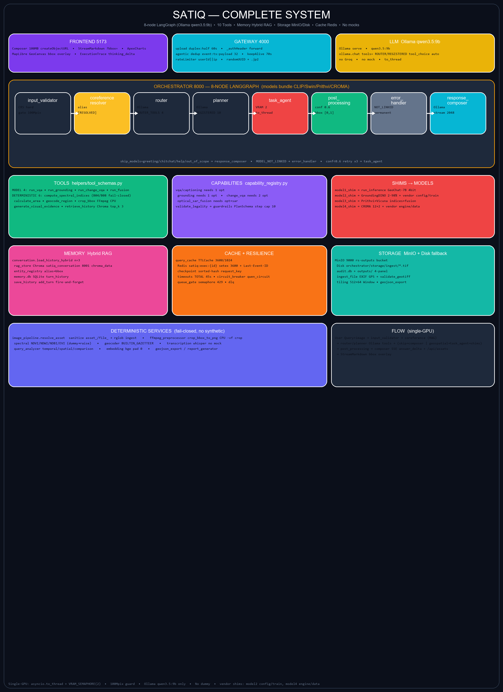
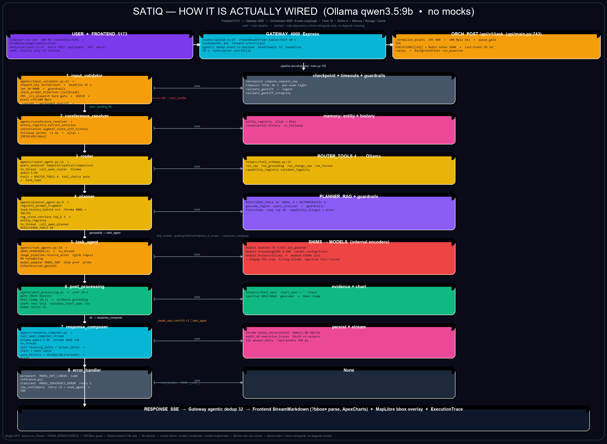

Frontend 5173 → Gateway 4000 → Orchestrator 8000 8-node (Ollama qwen3.5:9b) → Tools 10 → Shims 4 + reproject warp → Models • Memory 4-tier (working+episodic hybrid 0.7/0.3+decay+session where + semantic 180d + state Redis) • Storage MinIO/Disk • Cache Redis (p50/p99 + vram). Eval 20× mIoU/F1 + weights HF. File:line refs are current.
flowchart TB
USER([User: query + images]) --> FE[Frontend Composer
100MB createObjectURL • FormData]
FE --> GWQ[gateway /api/query
inject Authorization]
FE --> GWU[gateway /api/upload
duplex:half 60s]
GWU --> INGEST[(storage/ingest)]
GWQ --> ORCH["ORCH POST /api/v1/task
CRS 400 • 100Mpix 413 • queue 429"]
ORCH --> RUN[run_pipeline • pipeline.ainvoke]
RUN --> IV[input_validator
request_key • deadline 45s wait_for • guardrails]
IV -->|fail| EH[error_handler]
IV -->|pass| CR[coreference_resolver
entity_registry 4-tier]
CR --> R[router
Ollama ROUTER_TOOLS 4]
R --> P[planner
Ollama REGISTERED_TOOLS 10 + RAG 4-tier hybrid + guardrails]
P -->|skip| RC[response_composer
Ollama stream 2048]
P -->|geospatial| TA[task_agent
VRAM 2+queue4→503 • reproject warp • shims]
TA --> PP["post_processing
conf≥0.6 • bbox [0,1] • retry <2"]
PP --> RC
TA --> SHIMS["SHIMS → MODELS
GeoChat • GroundingDINO • Prithvi • CROMA"]
RC --> SSE["SSE queue_position • answer_delta → Gateway → Frontend
MODEL_NOT_LINKED banner + MapLibre bbox overlay"]
MEM["Memory 4-tier
working+episodic hybrid+semantic"] -. RAG .-> P
MET["Metrics p50/p99 + vram"] -. poll .-> TA
classDef fe fill:#7C3AED,stroke:#fff,color:#fff
classDef gw fill:#06B6D4,stroke:#fff,color:#000
classDef or fill:#F59E0B,stroke:#fff,color:#000
classDef llm fill:#EAB308,stroke:#000,color:#000
class FE,USER fe
class GWQ,GWU gw
class ORCH,RUN,IV,CR,TA or
class R,P llm

